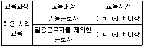
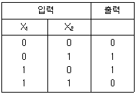
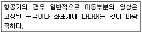
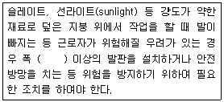
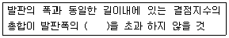
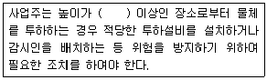

산업안전산업기사 (2018-03-04 기출문제)
1과목: 산업안전관리론
1. 산업안전보건법령상 근로자 안전·보건교육 기준 중 다음 ( ) 안에 알맞은 것은?

- ㉠ 1, ㉡ 8
- ㉠ 2, ㉡ 8
- ㉠ 1, ㉡ 2
- ㉠ 3, ㉡ 6
(정답률: 76%)

2. 안전심리의 5대 요소에 해당하는 것은?
- 기질(temper)
- 지능(intelligence)
- 감각(sense)
- 환경(environment)
(정답률: 71%)
3. 학습을 자극에 의한 반응으로 보는 이론에 해당하는 것은?
- 손다이크(Thorndike)의 시행착오설
- 퀠러(Kohler)의 통찰설
- 톨만(Tolman)의 기호형태설
- 레빈(Lewin)의 장이론
(정답률: 80%)
4. 학생이 마음속에 생각하고 있는 것을 외부에 구체적으로 실현하고 형상화하기 위하여 자기 스스로가 계획을 세워 수행하는 학습활동으로 이루어지는 학습지도의 형태는?
- 케이스 메소드(Case method)
- 패널 디스커션(Panel discussion)
- 구안법(Project method)
- 문제법(Problem method)
(정답률: 83%)
5. 헤드십(Headship)에 관한 설명으로 틀린 것은?
- 구성원과 사회적 간격이 좁다.
- 지휘의 형태는 권위주의적이다.
- 권한의 부여는 조직으로부터 위임받는다.
- 권한귀속은 공식화된 규정에 의한다.
(정답률: 82%)
6. 추락 및 감전 위험방지용 안전모의 일반구조가 아닌 것은?
- 착장체
- 충격흡수재
- 선심
- 모체
(정답률: 79%)
7. Safe-T-Score에 대한 설명으로 틀린 것은?
- 안전관리의 수행도를 평가하는데 유용하다.
- 기업의 산업재해에 대한 과거와 현재의 안전성적을 비교 평가한 점수로 단위가 없다.
- Safe-T-Score가 +2.0 이상인 경우는 안전관리가 과거보다 좋아졌음을 나타낸다.
- Safe-T-Score가 +2.0 ~ -2.0 사이인 경우는 안전관리가 과거에 비해 심각한 차이가 없음을 나타낸다.
(정답률: 77%)
8. 매슬로우(Maslow)의 욕구단계 이론의 요소가 아닌 것은?
- 생리적 욕구
- 안전에 대한 욕구
- 사회적 욕구
- 심리적 욕구
(정답률: 89%)
9. 산업안전보건법령상 안전·보건표지 중 지시 표지사항의 기본모형은?
- 사각형
- 원형
- 삼각형
- 마름모형
(정답률: 76%)
10. 재해 발생 시 조치사항 중 대책수립의 목적은?
- 재해발생 관련자 문책 및 처벌
- 재해 손실비 산정
- 재해발생 원인 분석
- 동종 및 유사재해 방지
(정답률: 75%)
11. 기업 내 정형교육 중 대상으로 하는 계층이 한정되어 있지 않고, 한번 훈련을 받은 관리자는 그 부하인 감독자에 대해 지도원이 될 수 있는 교육방법은?
- TWI(Training Within Industry)
- MTP(Management Training Program)
- CCS(Civil Communication Section)
- ATT(American Telephone & Telegram Co)
(정답률: 61%)
12. 부하의 행동에 영향을 주는 리더십 중 조언, 설명, 보상조건 등의 제시를 통한 적극적인 방법은?
- 강요
- 모범
- 제언
- 설득
(정답률: 79%)
13. 사고예방대책의 기본원리 5단계 중 제4단계의 내용으로 틀린 것은?
- 인사조정
- 작업분석
- 기술의 개선
- 교육 및 훈련의 개선
(정답률: 53%)
14. 주의(attention)의 특성 중 여러 종류의 자극을 받을 때 소수의 특정 한 것에만 반응하는 것은?
- 선택성
- 방향성
- 단속성
- 변동성
(정답률: 84%)
15. 재해예방의 4원칙이 아닌 것은?
- 원인계기의 원칙
- 예방가능의 원칙
- 사실보존의 원칙
- 손실우연의 원칙
(정답률: 82%)
16. 산업안전보건법령상 관리감독자의 업무의 내용이 아닌 것은?
- 해당 작업에 관련되는 기계·기구 또는 설비의 안전·보건점검 및 이상유무의 확인
- 해당 사업장 산업보건의 지도·조언에 대한 협조
- 위험성평가를 위한 업무에 기인하는 유해·위험요인의 파악 및 그 결과에 따라 개선조치의 시행
- 작성된 물질안전보건자료의 게시 또는 비치에 관한 보좌 및 조언·지도
(정답률: 68%)
17. 400명의 근로자가 종사하는 공장에서 휴업일수 127일, 중대 재해 1건이 발생한 경우 강도율은? (단, 1일 8시간으로 연 300일 근무조건으로 한다.)
- 10
- 0.1
- 1.0
- 0.01
(정답률: 55%)
18. 시행착오설에 의한 학습법칙이 아닌 것은?
- 효과의 법칙
- 준비성의 법칙
- 연습의 법칙
- 일관성의 법칙
(정답률: 63%)
19. 산업안전보건법령상 건설현장에서 사용하는 크레인, 리프트 및 곤돌라의 안전검사의 주기로 옳은 것은? (단, 이동식 크레인, 이삿짐운반용 리프트는 제외한다.)
- 최초로 설치한 날부터 6개월마다
- 최초로 설치한 날부터 1년마다
- 최초로 설치한 날부터 2년마다
- 최초로 설치한 날부터 3년마다
(정답률: 71%)
20. 위험예지훈련 4R방식 중 각 라운드(Round)별 내용 연결이 옳은 것은?
- 1R - 목표설정
- 2R - 본질추구
- 3R - 현상파악
- 4R - 대책수립
(정답률: 83%)
2과목: 인간공학 및 시스템안전공학
21. 시각적 표시장치를 사용하는 것이 청각적 표시장치를 사용하는 것보다 좋은 경우는?
- 메시지가 후에 참고 되지 않을 때
- 메시지가 공간적인 위치를 다룰 때
- 메시지가 시간적인 사건을 다룰 때
- 사람의 일이 연속적인 움직임을 요구할 때
(정답률: 66%)
22. 체계분석 및 설계에 있어서 인간공학의 가치와 가장 거리가 먼 것은?
- 성능의 향상
- 인력 이용율의 감소
- 사용장의 수용도 향상
- 사고 및 오용으로부터의 손실 감소
(정답률: 78%)
23. 휘도(luminance)의 척도 단위(unit)가 아닌 것은?
- fc
- fL
- mL
- cd/m2
(정답률: 53%)
24. 신체 반응의 척도 중 생리적 스트레스의 척도로 신체적 변화의 측정 대상에 해당하지 않는 것은?
- 혈압
- 부정맥
- 혈액성분
- 심박수
(정답률: 85%)
25. 안전성의 관점에서 시스템을 분석 평가하는 접근방법과 거리가 먼 것은?
- “이런 일은 금지한다.”의 개인판단에 따른 주관적인 방법
- “어떻게 하면 무슨 일이 발생할 것인가?”의 연역적인 방법
- “어떤 일은 하면 안 된다.”라는 점검표를 사용하는 직관적인 방법
- “어떤 일이 발생하였을 때 어떻게 처리하여야 안전한가?”의 귀납적인 방법
(정답률: 81%)
26. 다음의 연산표에 해당하는 논리연산은?

- XOR
- AND
- NOT
- OR
(정답률: 68%)
27. 항공기 위치 표시장치의 설계원칙에 있어, 다음 보기의 설명에 해당하는 것은?

- 통합
- 양립적 이동
- 추종표시
- 표시의 현실성
(정답률: 58%)
28. 근골격계 질환의 인간공학적 주요 위험요인과 가장 거리가 먼 것은?
- 과도한 힘
- 부적절한 자세
- 고온의 환경
- 단순 반복 작업
(정답률: 83%)
29. 산업현장에서 사용하는 생산설비의 경우 안전장치가 부착되어 있으나 생산성을 위해 제거하고 사용하는 경우가 있다. 이러한 경우를 대비하여 설계 시 안전장치를 제거하면 작동이 안 되는 구조를 채택하고 있다. 이러한 구조는 무엇인가?
- Fail Safe
- Fool Proof
- Lock Out
- Tamper Proof
(정답률: 64%)
30. FTA의 활용 및 기대효과가 아닌 것은?
- 시스템의 결함 진단
- 사고원인 규명화의 간편화
- 사고원인 분석의 정량화
- 시스템의 결함 비용 분석
(정답률: 74%)
31. 인간공학적 부품배치의 원칙에 해당하지 않는 것은?
- 신뢰성의 원칙
- 사용 순서의 원칙
- 중요성의 원칙
- 사용 빈도의 원칙
(정답률: 74%)
32. 시스템안전프로그램계획(SSPP)에서 “완성해야 할 시스템안전업무”에 속하지 않는 것은?
- 정성 해석
- 운용 해석
- 경제성 분석
- 프로그램 심사의 참가
(정답률: 57%)
33. 선형 조정장치를 16cm 옮겼을 때, 선형 표시장치가 4cm 움직였다면, C/R 비는 얼마인가?
- 0.2
- 2.5
- 4.0
- 5.3
(정답률: 81%)
34. 자연습구온도가 20℃ 이고, 흑구온도가 30℃일 때, 실내의 습구흑구온도지수(WBGT :wet-bulb globe temperature)는 얼마인가?
- 20℃
- 23℃
- 25℃
- 30℃
(정답률: 61%)
35. 소음을 방지하기 위한 대책으로 틀린 것은?
- 소음원 통제
- 차폐장치 사용
- 소음원 격리
- 연속 소음 노출
(정답률: 85%)
36. 산업안전 분야에서의 인간공학을 위한 제반 언급사항으로 관계가 먼 것은?
- 안전관리자와의 의사소통 원활화
- 인간과오 방지를 위한 구체적 대책
- 인간행동 특성자료의 정량화 및 축적
- 인간 - 기계체계의 설계 개선을 위한 기금의 축적
(정답률: 78%)
37. 시스템 안전을 위한 업무 수행 요건이 아닌 것은?
- 안전활동의 계획 및 관리
- 다른 시스템 프로그램과 분리 및 배제
- 시스템 안전에 필요한 사람의 동일성 식별
- 시스템 안전에 대한 프로그램 해석 및 평가
(정답률: 70%)
38. 컷셋과 최소 패스셋을 정의한 것으로 맞는 것은?
- 컷셋은 시스템 고장을 유발시키는 필요 최소한의 고장들의 집합이며, 최소 패스셋은 시스템의 신뢰성을 표시한다.
- 컷셋은 시스템 고장을 유발시키는 필요 최소한의 고장들의 집합이며, 최소 패스셋은 시스템의 불신뢰도를 표시한다.
- 컷셋은 그 속에 포함되어 있는 모든 기본사상이 일어났을 때 톱 사상을 일으키는 기본사상의 집합이며, 최소 패스셋은 시스템의 신뢰성을 표시한다.
- 컷셋은 그 속에 포함되어 있는 모든 기본사상이 일어났을 때 톱 사상을 일으키는 기본사상의 집합이며, 최소 패스셋은 시스템의 성공을 유발하는 기본사상의 집합이다.
(정답률: 69%)
39. 인체 측정치의 응용 원칙과 거리가 먼 것은?
- 극단치를 고려한 설계
- 조절 범위를 고려한 설계
- 평균치를 기준으로 한 설계
- 기능적 치수를 이용한 설계
(정답률: 56%)
40. 10시간 설비 가동 시 설비고장으로 1시간 정지하였다면 설비고장강도율은 얼마인가?
- 0.1%
- 9%
- 10%
- 11%
(정답률: 69%)
3과목: 기계위험방지기술
41. 500rpm으로 회전하는 연삭기의 숫돌지름이 200mm일 때 원주속도(m/min)는?
- 628
- 62.8
- 314
- 31.4
(정답률: 63%)
42. 기계의 운동 형태에 따른 위험점의 분류에서 고정부분과 회전하는 동작 부분이 함께 만드는 위험점으로 교반기의 날개와 하우스 등에서 발생하는 위험점을 무엇이라 하는가?
- 끼임점
- 절단점
- 물림점
- 회전말림점
(정답률: 73%)
43. 컨베이어 작업시작 전 점검해야 할 사항으로 거리가 먼 것은?
- 원동기 및 풀리 기능의 이상 유무
- 이탈 등의 방지장치 기능의 이상유무
- 비상정지장치의 이상유무
- 자동전격방지장치의 이상 유무
(정답률: 69%)
44. 아세틸렌 용접장치에서 아세틸렌 발생기실 설치 위치 기준으로 옳은 것은?
- 건물 지하층에 설치하고 화기 사용설비로부터 3미터 초과 장소에 설치
- 건물 지하층에 설치하고 화기 사용설비로부터 1.5미터 초과 장소에 설치
- 건물 최상층에 설치하고 화기 사용설비로부터 3미터 초과 장소에 설치
- 건물 최상층에 설치하고 화기 사용설비로부터 1.5미터 초과 장소에 설치
(정답률: 64%)
45. 기계설비 방호에서 가드의 설치조건으로 옳지 않은 것은?
- 충분한 강도를 유지할 것
- 구조가 단순하고 위험점 방호가 확실할 것
- 개구부(틈새)의 간격은 임의로 조정이 가능할 것
- 작업, 점검, 주유 시 장애가 없을 것
(정답률: 85%)
46. 완전 회전식 클러치 기구가 있는 양수조작식 방호장치에서 확동클러치의 봉합개소가 4개, 분당 행정수가 200spm일 때, 방호장치의 최소 안전거리는 몇 mm 이상이어야 하는가?
- 80
- 120
- 240
- 360
(정답률: 31%)
47. 목재가공용 둥근톱의 두께가 3mm일 때, 분할날의 두께는 몇 mm이상이어야 하는가?
- 3.3 mm 이상
- 3.6 mm 이상
- 4.5 mm 이상
- 4.8 mm 이상
(정답률: 75%)
48. 산업안전보건법령에 따라 타워크레인의 운전 작업을 중지해야 되는 순간풍속의 기준은?
- 초당 10m를 초과하는 경우
- 초당 15m를 초과하는 경우
- 초당 30m를 초과하는 경우
- 초당 35m를 초과하는 경우
(정답률: 65%)
49. 탁상용 연삭기에서 숫돌을 안전하게 설치하기 위한 방법으로 옳지 않은 것은?
- 숫돌바퀴 구멍은 축 지름보다 0.1mm 정도 작은 것을 선정하여 설치한다.
- 설치 전에는 육안 및 목재 해머로 숫돌의 흠, 균열을 점검한 후 설치한다.
- 축의 턱에 내측 플랜지, 압지 또는 고무판, 숫돌 순으로 끼운 후 외측에 압지 또는 고무판, 플랜지, 너트 순으로 조인다.
- 가공물 받침대는 숫돌의 중심에 맞추어 연삭기에 견고히 고정한다.
(정답률: 73%)
50. 다음중 근로자에게 위험을 미칠 우려가 있을 떄 덮개 또는 울을 설치해야 하는 위치와가장 거리가 먼 것은?
- 연삭기 또는 평삭기의 테이블, 형삭기 램 등의 행정 끝
- 선반으로부터 돌출하여 회전화고 있는 가공물 부금
- 과열에 따른 과열이 예산되는 보일러의 버너 연소실
- 띠톱기계의 위험한 톱날(절단부분 제외) 부위
(정답률: 76%)
51. 산업안전보건법령상 차량계 하역 운반기계를 이용한 화물 적재 시의 준수해야 할 사항으로 틀린 것은?
- 최대적재량의 10% 이상 초과하지 않도록 적재한다.
- 운전자의 시야를 가리지 않도록 적재한다.
- 붕괴, 낙하 방지를 위해 화물에 로프를 거는 등 필요 조치를 한다.
- 편하중이 생기지 않도록 적재한다.
(정답률: 78%)
52. 롤러기의 급정지 장치 중 복부 조작식과 무릎 조작식의 조작부 위치 기준은? (단, 밑면과 상대거리를 나타낸다.)(순서대로 복부 조작식 / 무릎 조작식)
- 0.5~0.7[m] / 0.2~0.4[m]
- 0.8~1.1[m] / 0.4~0.6[m]
- 0.8~1.1[m] / 0.6~0.8[m]
- 1.1~1.4[m] / 0.8~1.0[m]
(정답률: 68%)
53. 양수조작식 방호장치에서 2개의 누름버튼 간의 거리는 300mm 이상으로 정하고 있는데 이 거리의 기준은?
- 2개의 누름버튼 간의 중심거리
- 2개의 누름버튼 간의 외측거리
- 2개의 누름버튼 간의 내측거리
- 2개의 누름버튼 간의 평균 이동거리
(정답률: 67%)
54. 다음 중 프레스에 사용되는 광전자식 방호장치의 일반구조에 관한 설명으로 틀린 것은?
- 방호장치의 감지기능은 규정한 검출영역 전체에 걸쳐 유효하여야 한다.
- 슬라이드 하강 중 정전 또는 방호장치의 이상시에는 1회 동작 후 정지할 수 있는 구조이어야 한다.
- 정상동작표시램프는 녹색, 위험표시램프는 붉은색으로 하며, 쉽게 근로자가 볼 수 있는 곳에 설치해야 한다
- 방호장치의 정상작동 중에 감지가 이루어지거나 공급전원이 중단되는 경우 적어도 두 개 이상의 독립된 출력신호 개폐장치가 꺼진 상태로 돼야 한다.
(정답률: 68%)
55. 보일러수에 불순물이 많이 포함되어 있을 경우, 보일러수의 비등과 함께 수면부위에 거품을 형성하여 수위가 불안정하게 되는 현상은?
- 프라이밍(priming)
- 포밍(foaming)
- 캐리오버(carry over)
- 위터해머(water hammer)
(정답률: 83%)
56. 다음 중 연삭기의 사용상 안전대책으로 적절하지 않은 것은?
- 방호장치로 덮개를 설치한다.
- 숫돌 교체 후 1분 정도 시운전을 실시한다.
- 숫돌의 최고사용회전속도를 초과하여 사용하지 않는다.
- 숫돌 측면을 사용하는 것을 목적으로 하는 연삭숫돌을 제외하고는 측면 연삭을 하지 않도록 한다.
(정답률: 80%)
57. 다음 중 드릴 작업시 가장 안전한 행동에 해당하는 것은?
- 장갑을 끼고 옷 소매가 긴 작업복을 입고 작업한다.
- 작업 중에 브로시로 칩을 털어낸다
- 가공할 구멍 지름이 클 경우 작은 구멍을 먼저 뚫고 그 위에 큰 구멍을 뚫는다.
- 드릴을 먼저 회전시킨 상태에서 공작물을 고정한다.
(정답률: 77%)
58. 다음 중 산업안전보건법령에 따라 비파괴 검사를 실시해야하는 고속회전체의 기준은?
- 회전축중량 1톤 초과, 원주속도 120m/s이상
- 회전축중량 1톤 초과, 원주속도 100m/s이상
- 회전축중량 0.7톤 초과, 원주속도 120m/s이상
- 회전축중량 0.7톤 초과, 원주속도 100m/s이상
(정답률: 67%)
59. 지게차의 안전장치에 해당하지 않는 것은?
- 후사경
- 헤드가드
- 백 레스트
- 권과방지장치
(정답률: 68%)
60. 다음 중 접근반응형 방호장치에 해당되는 것은?
- 양수조작식 방호장치
- 손쳐내기식 방호장치
- 덮개식 방호장치
- 광전자식 방호장치
(정답률: 56%)
4과목: 전기 및 화학설비위험방지기술
61. 저압 옥내직류 전기설비를 전로보호장치의 확실한 동작의 확보와 이상전압 및 대지전압의 억제를 위하여 접지를 하여야하나 직류 2선식으로 시설할 때, 접지를 생략할 수 있는 경우에 해당하지 않는 것은?
- 접지 검출기를 설치하고, 특정구역 내의 산업용 기계기구에만 공급하는 경우
- 사용전압이 110V 이상인 경우
- 최대전류 30mA 이하의 직류화재경보회로
- 교류계통으로부터 공급을 받는 정류기에서 인출되는 직류계통
(정답률: 65%)
62. 감전에 의한 전격위험을 결정하는 주된 인자와 거리가 먼 것은?
- 통전저항
- 통전전류의 크기
- 통전경로
- 통전시간
(정답률: 57%)
63. 폭발위험장소를 분류할 때 가스폭발위험장소의 종류에 해당하지 않는 것은?
- 0종 장소
- 1종 장소
- 2종 장소
- 3종 장소
(정답률: 73%)
64. 다음 중 정전기 재해의 방지대책으로 가장 적절한 것은?
- 절연도가 높은 플라스틱을 사용한다.
- 대전하기 쉬운 금속은 접지를 실시한다.
- 작업장 내의 온도를 낮게해서 방전을 촉진시킨다.
- (+), (-)전하의 이동을 방해하기 위하여 주위의 습도를 낮춘다.
(정답률: 66%)
65. 전로의 과전류로 인한 재해를 방지하기 위한 방법으로 과전류 차단장치를 설치할 때에 대한 설명으로 틀린 것은?
- 과전류 차단장치로는 차단기·퓨즈 또는 보호계전기 등이 있다.
- 차단기·퓨즈는 계통에서 발생하는 최대 과전류에 대하여 충분하게 차단할 수 있는 성능을 가져야 한다.
- 과전류 차단장치는 반드시 접지선에 병렬로 연결하여 과전류 발생시 전로를 자동으로 차단하도록 설치하여야 한다.
- 과전류 차단장치가 전기계통상에서 상호 협조·보완되어 과전류를 효과적으로 차단하도록 하여야 한다.
(정답률: 73%)
66. 인체의 저항이 500Ω 이고, 440V 회로에 누전차단기(ELB)를 설치 할 경우 다음 중 가장 적당한 누전차단기는?
- 30mA 이하, 0.1초 이하에 작동
- 30mA 이하, 0.03초 이하에 작동
- 15mA 이하, 0.1초 이하에 작동
- 15mA 이하, 0.03초 이하에 작동
(정답률: 72%)
67. 다음 중 통전경로별 위험도가 가장 높은 경로는?
- 왼손 - 등
- 오른손 - 가슴
- 왼손 - 가슴
- 오른손 - 양발
(정답률: 77%)
68. 정전기 발생 종류가 아닌 것은?
- 박리
- 마찰
- 분출
- 방전
(정답률: 66%)
69. 다음 중 방폭구조의 종류와 기호를 올바르게 나타낸 것은?
- 안전증방폭구조 : e
- 몰드방폭구조 : n
- 충전방폭구조 : p
- 압력방폭구조 : o
(정답률: 68%)
70. 전기설비에서 일반적인 제2종 접지공사는 접지저항 값을 몇 [Ω]이하로 하여야 하는가?(관련 규정 개정전 문제로 여기서는 기존 정답인 3번을 누르면 정답 처리됩니다. 자세한 내용은 해설을 참고하세요.)
- 10
- 100
- 150/1선 지락선류
- 400/1선 지락선류
(정답률: 74%)
71. 다음 중 분진폭발의 가능성이 가장 낮은 물질은?
- 소맥분
- 마그네슘
- 질석가루
- 석탄
(정답률: 72%)
72. 인화성 가스, 불활성 가스 및 산소를 사용하여 금속의 용접·용단 또는 가열작업을 하는경우 가스등의 누출 또는 방출로 인한 폭발·화재 또는 화상을 예방하기 위하여 준수해야할 사항으로 옳지 않은 것은?
- 가스등의 호스와 취관(吹管)은 손상·마모등에 의하여 가스등이 누출할 우려가 없는 것을 사용할 것
- 비상상황을 제외하고는 가스등의 공급구의 밸브나 콕을 절대 잠그지 말 것
- 용단작업을 하는 경우에는 취관으로부터 산소의 과잉방출로 인한 화상을 예방하기 위하여 근로자가 조절밸브를 서서히 조작하도록 주지시킬 것
- 가스등의 취관 및 호스의 상호 접촉부분은 호스밴드, 호스클립 등 조임기구를 사용하여 가스등이 누출되지 않도록 할 것
(정답률: 75%)
73. 산업안전보건기준에 관한 규칙상 섭씨 몇 ℃ 이상인 상태에서 운전되는 설비는 특수화학설비에 해당하는가? (단, 규칙에서 정한 위험물질의 기준량 이상을 제조하거나 취급하는 설비인 경우이다.)
- 150℃
- 250℃
- 350℃
- 450℃
(정답률: 51%)
74. 점화원 없이 발화를 일으키는 최저온도를 무엇이라 하는가?
- 착화점
- 연소점
- 용융점
- 기화점
(정답률: 68%)
75. 배관용 부품에 있어 사용되는 용도가 다른 것은?
- 엘보(elbow)
- 티이(T)
- 크로스(cross)
- 밸브(valve)
(정답률: 70%)
76. 에틸에테르(폭발하한값 1.9vol%)와 에틸알콜(폭발하한값 4.3vol%)이 4:1로 혼합된 증기의 폭발하한계(vol%)는 약 얼마인가? (단, 혼합증기는 에틸에테르가 80%, 에틸알콜리 20%로 구성되고, 르샤틀리에 법칙을 이용한다.)
- 2.14vol%
- 3.14vol%
- 4.14vol%
- 5.14vol%
(정답률: 40%)
77. 다음 중 산업안전보건기준에 관한 규칙에서 규정하는 급성 독성물질에 해당되지 않는 것은?
- 쥐에 대한 경구투입실험에 의하여 실험동물의 50%를 사망시킬 수 있는 물질의 양이 kg당 300mg-(체중) 이하인 화학물질
- 쥐에 대한 경피흡수실험에 의하여 실험동물의 50%를 사망시킬 수 있는 물질의 양이 kg당 1000mg-(체중) 이하인 화학물질
- 토끼에 대한 경피흡수실험에 의하여 실험동물의 50%를 사망시킬 수 있는 물질의 양이kg당 1000mg-(체중) 이하인 화학물질
- 쥐에 대한 4시간 동안의 흡입실험에 의하여 실험동물의 50%를 사망시킬 수 있는 가스의 농도가 3000ppm 이상인 화학물질
(정답률: 71%)
78. 연소의 3요소 중 1가지에 해당하는 요소가 아닌 것은?
- 메탄
- 공기
- 정전기 방전
- 이산화탄소
(정답률: 58%)
79. 다음 물질이 물과 반응하였을 때 가스가 발생한다. 위험도 값이 가장 큰 가스를 발생하는 물질은?
- 칼륨
- 수소화나트륨
- 탄화칼슘
- 트리에틸알루미늄
(정답률: 38%)
80. 다음 중 화재의 분류에서 전기화재에 해당하는 것은?
- A급 화재
- B급 화재
- C급 화재
- D급 화재
(정답률: 76%)
5과목: 건설안전기술
81. 잠함 또는 우물통의 내부에서 근로자가 굴착작업을 하는 경우의 준수사항으로 옳지 않는 것은?
- 산소결핍 우려가 있는 경우에는 산소의 농도를 측정하는 사람을 지명하여 측정하도록 할것
- 근로자가 안전하게 오르내리기 위한 설비를 설치할 것
- 굴착깊이가 20m를 초과하는 경우에는 해당 작업장소와 외부와의 연락을 위한 통신설비 등을 설치할 것
- 잠함 또는 우물통의 급격한 침하에 의한 위험을 방지하기 위하여 바닥으로부터 천장 또는 보까지의 높이는 2m 이내로 할 것
(정답률: 53%)
82. 굴착작업 시 근로자의 위험을 방지하기 위하여 해당 작업, 작업장에 대한 사전조사를 실시하여야 하는데 이 사전조사 항목에 포함되지 않는 것은?
- 지반의 지하수위 상태
- 형상·지질 및 지층의 상태
- 굴착기의 이상 유무
- 매설물 등의 유무 또는 상태
(정답률: 64%)
83. 흙의 연경도(Consistency)에서 반고체 상태와 소성상태의 한계를 무엇이라 하는가?
- 액성한계
- 소성한계
- 수축한계
- 반수축한계
(정답률: 70%)
84. 화물을 적재하는 경우 준수하여야 할 사항으로 옳지 않은 것은?
- 침하 우려가 없는 튼튼한 기반 위에 적재할 것
- 화물의 압력정도와 관계없이 건물의 벽이나 칸막이 등을 이용하여 화물을 기대에 적재할 것
- 하중이 한쪽으로 치우치지 않도록 쌓을 것
- 불안정할 정도로 높이 쌓아 올리지 말 것
(정답률: 82%)
85. 발파공사 암질 변화구간 및 이상암질 출현 시 적용하는 암질 판별방법과 거리가 먼 것은?
- R.Q.D
- RMR 분류
- 탄성파 속도
- 하중계(Load Cell)
(정답률: 65%)
86. 철골작업을 중지하여야 하는 풍속과 강우량 기준으로 옳은 것은?
- 풍속 : 10m/sec 이상, 강우량 : 1mm/h 이상
- 풍속 : 5m/sec 이상, 강우량 : 1mm/h 이상
- 풍속 : 10m/sec 이상, 강우량 : 2mm/h 이상
- 풍속 : 5m/sec 이상, 강우량 : 2mm/h 이상
(정답률: 79%)
87. 근로자의 추락 등의 위험을 방지하기 위하여 안전난간을 설치하는 경우 안전난간은 구조적으로 가장 취약한 지점에서 가장 취약한 방향으로 작용하는 얼마 이상의 하중에 견딜 수 있는 튼튼한 구조이어야 하는가?
- 50kg
- 100kg
- 150kg
- 200kg
(정답률: 68%)
88. 달비계(곤돌라의 달비계는 제외)의 최대 적재하중을 정하는 경우 달기와이어로프 및 달기강선의 안전계수 기준으로 옳은 것은?
- 5이상
- 7이상
- 8이상
- 10이상
(정답률: 43%)
89. 지반의 종류에 따른 굴착면의 기울기 기준으로 옳지 않은 것은?(2021년 11월19일 변경된 규정 적용됨)
- 보통 흙의 습지 - 1:1~1:1.5
- 연암 - 1:0.7
- 풍화암 - 1:1.0
- 보통 흙의 건지 - 1:0.5~1:1
(정답률: 65%)
90. 재료비가 30억원, 직접노무비가 50억원인 건설공사의 예정가격상 안전관리비로 옳은 것은? (단, 일반건설공사(갑)에 해당되며 계상기준은 1.97%임)
- 56,400,000원
- 94,000,000원
- 150,400,000원
- 157,600,000원
(정답률: 56%)
91. 사질토지반에서 보일링(boiling)현상에 의한 위험성이 예상될 경우의 대책으로 옳지 않은 것은?
- 흙막이 말뚝의 밑둥넣기를 깊게 한다.
- 굴착 저면보다 깊은 지반을 불투수로 개량한다.
- 굴착 밑 투수층에 만든 피트(pit)를 제거한다.
- 흙막이벽 주위에서 배수시설을 통해 수두차를 적게 한다.
(정답률: 61%)
92. 유해·위험 방지계획서 제출 시 첨부서류의 항목이 아닌 것은?
- 보호장비 폐기계획
- 공사개요서
- 산업안전보건관리비 사용계획
- 전체공정표
(정답률: 62%)
93. 다음 ( )안에 알맞은 수치는?

- 30cm
- 40cm
- 50cm
- 60cm
(정답률: 70%)
94. 다음 중 쇼벨계 굴착기계에 속하지 않는 것은?
- 파워쇼벨(power shovel)
- 크램쉘(clamshell)
- 스크레이퍼(scraper)
- 드래그라인(dragline)
(정답률: 57%)
95. 토사 붕괴의 내적 요인이 아닌 것은?
- 사면, 법면의 경사 증가
- 절토 사면의 토질구성 이상
- 성토 사면의 토질구성 이상
- 토석의 강도 저하
(정답률: 63%)
96. 다음은 비계발판용 목재재료의 강도상의 결점에 대한 조사기준이다. ( )안에 들어갈 내용으로 옳은 것은?

- 1/2
- 1/3
- 1/4
- 1/6
(정답률: 38%)
97. 다음은 산업안전보건법령에 따른 작업장에서의 투하설비 등에 관한 사항이다. 빈칸에 들어갈 내용으로 옳은 것은?

- 2
- 3
- 5
- 10
(정답률: 44%)
98. 철골용접 작업자의 전격 방지를 위한 주의사항으로 옳지 않은 것은?
- 보호구와 복장을 구비하고, 기름기가 묻었거나 젖은 것은 착용하지 않을 것
- 작업중지의 경우에는 스위피를 떼어 놓을 것
- 개로전압이 높은 교류 용접기를 사용할 것
- 좁은 장소에서의 작업에서는 신체를 노출시키지 않을 것
(정답률: 78%)
99. 층고가 높은 슬래브 거푸집 하부에 적용하는 무지주 공법이 아닌 것은?
- 보우빔(bow beam)
- 철근일체형 데크플레이트(deck plate)
- 페코빔(pecco beam)
- 솔져시스템(soldier system)
(정답률: 62%)
100. 도심지에서 주변에 주요시설물이 있을 때 침하와 변위를 적게 할 수 있는 가장 적당한 흙막이 공법은?
- 동결공법
- 샌드드레인공법
- 지하연속벽공법
- 뉴매틱케이슨공법
(정답률: 52%)